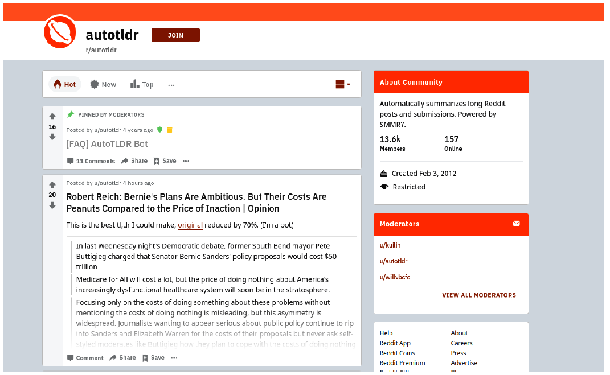

15.1 Text Summarization
Extractive versus abstractive shortening of a document.
1. Shorten the document, keep the point
Text summarization turns a long document into a shorter text that a person (or an indexer) can use. The goal is not "as short as possible." It is a coherent piece that still carries the main ideas.
Benefits you can sell: faster reading, a smaller search index, a cleaner store of "what this file was about."
This note follows the same applied texts as the rest of the course: Practical Natural Language Processing and NLP in Action.
2. Three design choices
Research since the DUC conferences organizes the job along three axes.
| Axis | Option A | Option B |
|---|---|---|
| How the words are produced | Extractive: pick sentences that already exist | Abstractive: write new sentences |
| Whether a query exists | Query-focused: answer this information need | Query-independent: a general digest |
| How many sources | Single-document | Multi-document: fuse a cluster |
Extractive is copy-and-rank. It cannot invent a fact, and it can sound choppy. Abstractive can read more naturally and can also hallucinate.
Query-focused summaries change with the user. Query-independent summaries are what you put at the top of an article or in an index.
Multi-document work has to handle repetition and contradiction across files. Do not start there.
3. What people actually ship
The common industrial case is single-document, query-independent, extractive.
Purpose: a short digest for a reader, or a stand-in document for a search index.

Two other patterns from real deployments:
- Highlight instead of rewrite. Color the sentences that carry the gist of a news story. The user still sees the article. You only need a sentence ranker.
- Index the summary. Store the digest, not the full text, when the index is too large. Retrieval quality then depends on the digest.
Both are extractive problems with a UI choice on top.
4. Practical advice
Pre-processing dominates. Sentence splitting and HTML cleanup decide what the ranker is allowed to pick. Library splitters fail on lists, captions, and "U.S." A bad split becomes a bad "sentence" in the summary. Write a splitter for your format if the default is clearly wrong.
Length hurts some algorithms. Graph methods (TextRank and cousins) get expensive on long inputs. Two workarounds:
- summarize chunks, then summarize the union
- take the first (M\%) and last (N\%) when those parts hold the thesis (same trick as KPE)
Evaluate with a task. ROUGE against a reference is the research default. In a product, measure whether people click, whether search still finds the file, or whether a highlighter agrees with an editor. A fluent abstractive paragraph that adds a date the article never stated is a failure.
Lead and conclusion bias is real: extractive rankers love the first paragraph. That is often correct for news and wrong for a methods section. If your corpus is scientific or legal, do not trust a "first 3 sentences" baseline without checking.
Graph summarizers share DNA with graph KPE (note 10.3): sentences are nodes, overlap is an edge, PageRank picks the summary. The same length and overlap warnings apply.
5. What this note is for
You should be able to:
- place a project on the three axes above
- say why extractive is the default first system
- name the two production failure modes: bad sentence splits and too-long graphs
6. Practice
-
A legal tool must not invent a clause. Extractive or abstractive? Why?
-
You want "sentences that answer What did the Fed do?" Which cell of the table is that?
-
TextRank times out on 80-page filings. What do you change before you change the algorithm?
Chunk first. A summary of summaries is cheaper than a graph on 2,000 sentences.